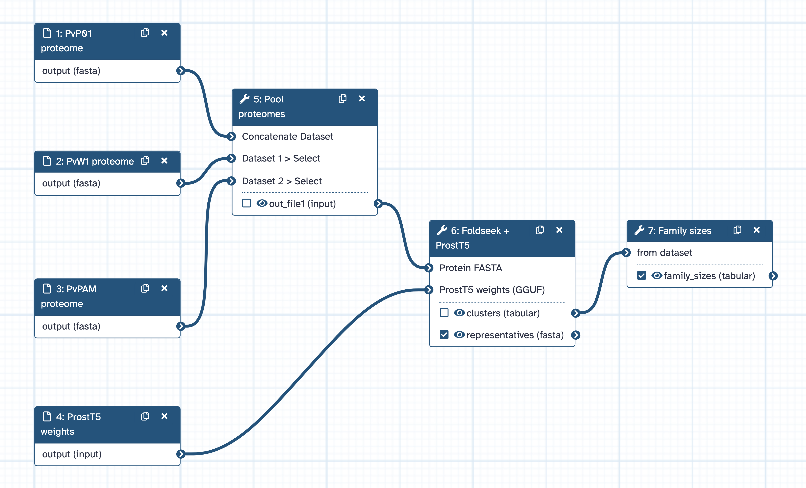
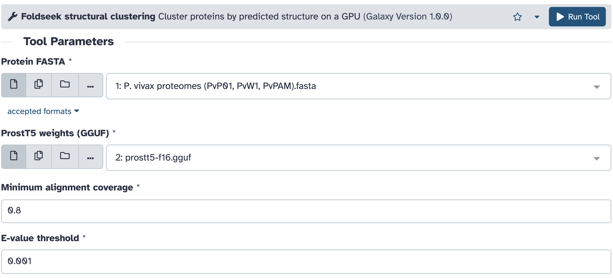

AThe gap
Research code starts as a notebook, a lab script, a published method or AI-drafted code. Writing the first version is the easy part. To become a step you can rerun, scale up and share, it also needs:
- 1Interfacetyped inputs and outputs
- 2Environmentthe exact software
- 3Datalarge datasets, in place
- 4Computecores, memory, GPUs
- 5Provenancewhat ran, on what, how
- 6Sharinga step others can reuse
On a shared Galaxy server, a new tool must also be wrapped, reviewed and installed by an administrator: the right default for shared tools, but slow for one small step.
BThe last mile
usegalaxy.org runs ~2,500 tools from a Tool Shed of 8,000+ repositories. What's missing is usually one small step: a new method, an extra option, a wrapper merged but not yet installed.
Each round is a save in the tool editor, on the production server and real data.

Then graduate it to a community tool
When a UDT proves itself, turn it into a regular wrapper and open a pull request to galaxyproject/tools-iwc-lab: Planemo lint and tests in CI, published to the Tool Shed under the experimental iwc-lab owner. Mature wrappers move on to tools-iuc, installable on any Galaxy server.
CAnatomy of a UDT
Foldseek clustering with ProstT5-predicted structures, as run on usegalaxy.org with 32 cores and a GPU, in Galaxy's tool editor.
{{EDITOR}}- 1The container is the environment, pinned by tag
- 2A resource request: cores, memory, a GPU (E)
- 3
$(inputs.…)are typed, sandboxed expressions; hover shows each type (D) - 4
$GALAXY_SLOTS: the site sets the core count - 5Typed inputs become the form in F
- 6Outputs become datasets with provenance
DSafe by construction
In the tool definition
- Commands are templated with sandboxed JavaScript expressions that cannot reach the database or filesystem
- A container is mandatory
- Inputs are typed and validated before a job exists
At the site
- Access is granted once per account
- Routing and resource limits stay with the site (E)
ERequesting compute
The site's job router (TPV) applies policy
- Only destinations that opt in accept UDT jobs
- GPU requests need the GPU Access role
- Per-user pools cap a user's total cores, memory, GPUs
Jetstream2 GPU node (NSF ACCESS)
- Pulsar + Singularity; container required
- 32 cores become
$GALAXY_SLOTS; 1 GPU
FWhat Galaxy does with it

inputs block: dataset pickers filtered by format, labelled numeric fields with defaults.GWhat AI agents do with UDTs
- Galaxy Workflow Foundry gives AI agents the knowledge to translate pipelines from other systems into Galaxy workflows. Converting the Nextflow pipeline nf-core/rnaseq for usegalaxy.org, every step mapped to an installed Galaxy tool except RSEM quantification: its community wrapper was merged but not yet installed. The agent wrote one RSEM UDT so the workflow could run now. It reproduced the wrapper's test outputs exactly.
- Orbit, an AI assistant that plans and runs analyses on Galaxy, builds the tool when none fits. It writes a UDT, has Galaxy validate it, runs it on the real data, reads any failure, fixes and re-creates it, and carries on with the analysis. Each definition is saved with the analysis notebook, keyed to the exact tool that ran.